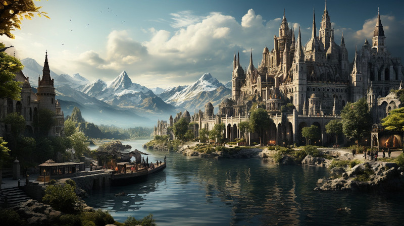

Figure 1: Saoirse along the Shauv canal linking Lake Shauv with the Duv Sea
Saoirse, the crown jewel of the Federation of Boigna, stands as a testament to the spirit of freedom and cooperation that defines its people. This bustling capital, with its grand maritime architecture, is perched majestically along the banks of the Shauv canal, serving as the lifeblood of trade between Lake Shauv and the vast Duv Sea.
The city’s skyline is a tapestry of spires and domes, reflecting the eclectic influences of the many cultures that have mingled here. The streets of Saoirse are alive with the vibrant hustle of traders, the calls of seafarers, and the scholarly debates of philosophers. The scent of salt and spices hangs in the air, a constant reminder of the city’s thriving commerce and its pivotal role in the maritime economy.
At the heart of Saoirse lies the bustling harbor, where ships from distant lands are anchored, unloading their treasures and tales. The markets are a cacophony of languages and a kaleidoscope of colors, where the finest goods of both land and sea exchange hands in a symphony of commerce.
Yet, Saoirse is more than a trade hub; it is a beacon of learning and innovation. The famed Saoirse Academy stands as a vanguard of enlightenment, its libraries and lecture halls brimming with eager minds and groundbreaking ideas.
Governing all is the Council of Captains, a body that reflects the city’s democratic ethos, where decisions are weighed carefully like the cargo in a merchant’s scale. Here, the principles of symbiosis and social contract are not just theoretical constructs but the guiding stars of daily life.
Saoirse is a city that honors its past while sailing ever forward, embodying the dynamic soul of Boigna—proud, free, and unbound by the tides of convention.